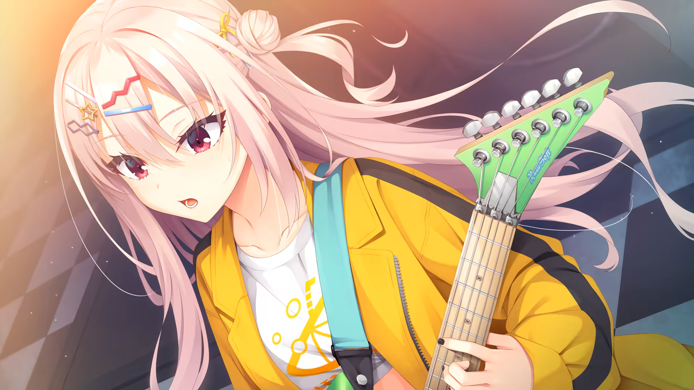
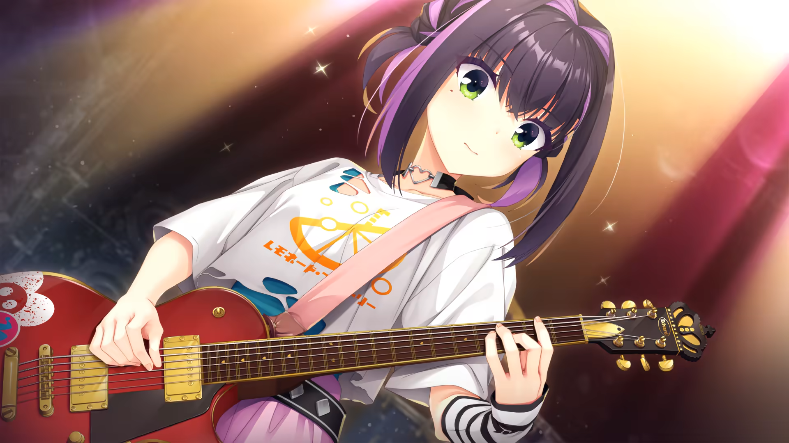

RUSH PROJECT
Choose a route to open a portfolio.

Route A Monic@ THE HOLY UNIX AND VN WEEB Open chapter
Route B Larper MACBOOK STARTUP LARPER Open chapterNarrator
Two teammates. One rush. Choose whose story you want to read first.